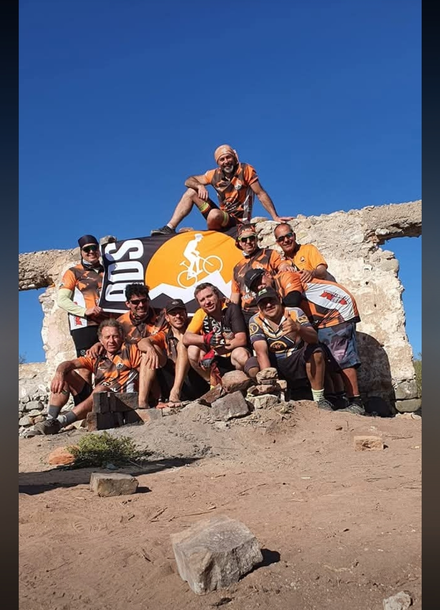
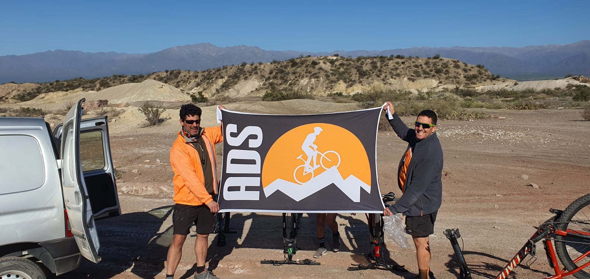
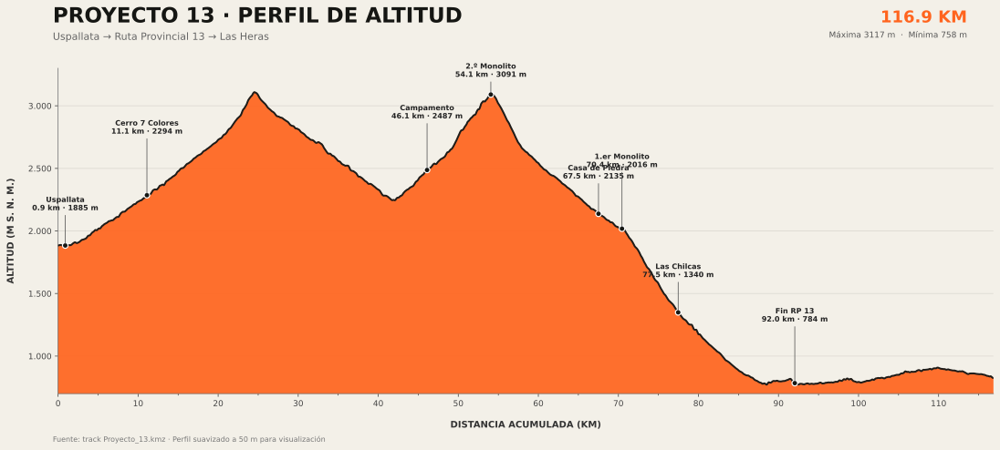
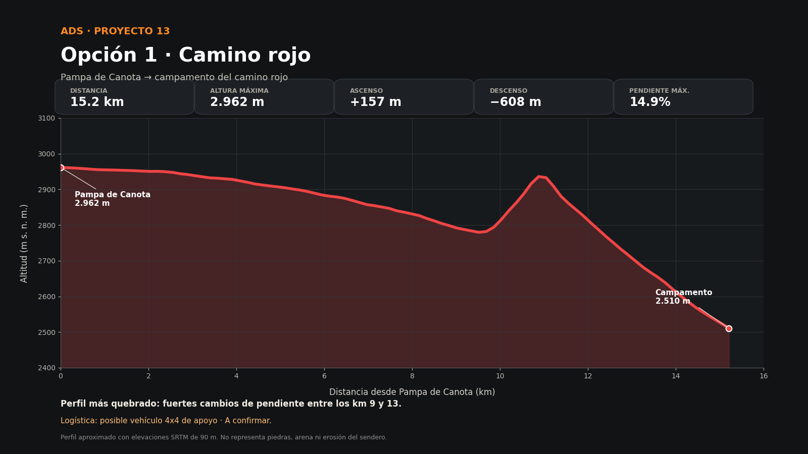
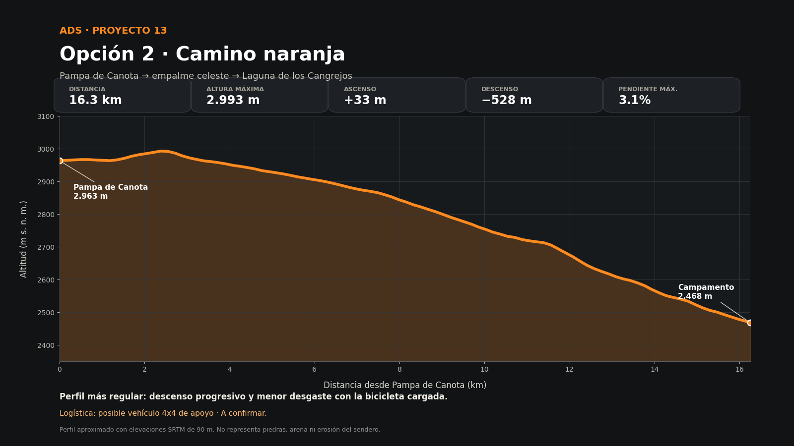
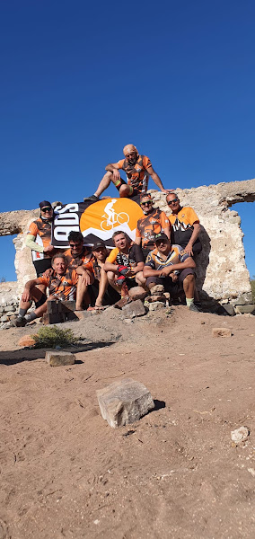
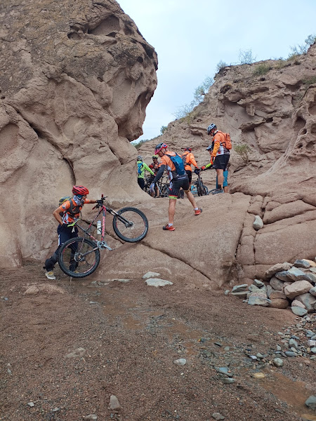
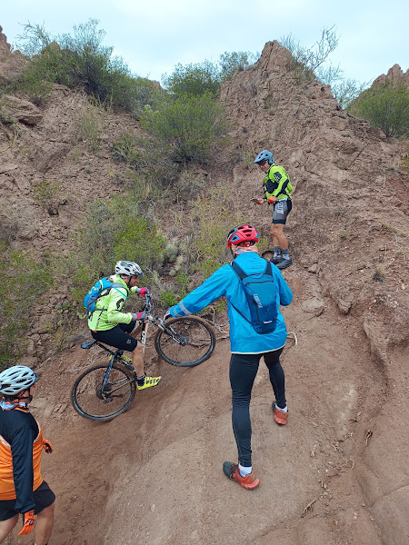
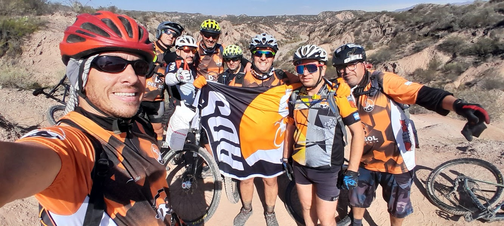

Uspallata
Concentración, revisión de bicicletas y salida desde el centro, aproximadamente a 1.900 m s. n. m.

ADS · AMIGOS DE SIEMPRE PRESENTA
Dos días. Una ruta salvaje. La montaña y la amistad de siempre.
EL DESAFÍO
Proyecto 13 es una travesía MTB de autosuficiencia. Partiremos desde el centro de Uspallata, atravesaremos Cerro Siete Colores, las minas y Pampa de Canota, y definiremos el camino hacia el campamento. Una de las alternativas llega a la Laguna de los Cangrejos. Al día siguiente continuaremos por el Segundo Monolito, Casa de Piedra y Las Chilcas hasta el Barrio Municipal de Las Heras.
Distancias y altitudes calculadas a partir del track de Proyecto 13 y un modelo de elevación SRTM.

“No es solamente llegar.
Es llegar juntos.”
HOJA DE RUTA · BORRADOR
Camino natural, piedra suelta, pendientes pronunciadas y sectores técnicos. El trazado definitivo, los horarios y las paradas se acordarán en el grupo.
Concentración, revisión de bicicletas y salida desde el centro, aproximadamente a 1.900 m s. n. m.
Primer gran atractivo del recorrido: formaciones minerales, quebradas y vistas abiertas del valle.
Desvío por el antiguo sector minero antes de continuar hacia la zona alta.
Punto clave cercano a los 3.000 metros donde se separan las dos alternativas de camino.
Campamento propuesto para la alternativa naranja, luego de empalmar con el camino celeste.
Uno de los puntos más altos del recorrido y referencia principal de la segunda jornada.
Parada de referencia durante el descenso por la precordillera.
Último sector destacado antes de encarar la aproximación final a Las Heras.
Llegada final, reencuentro y cierre de la travesía.
Salida temprana por Cerro Siete Colores, minas y Pampa de Canota. Desde allí se tomará la alternativa elegida, procurando llegar al campamento con luz.
Desarme y salida hacia el Segundo Monolito. Luego, descenso por Casa de Piedra y Las Chilcas hasta el Barrio Municipal.
PERFIL GENERAL
El track base parte cerca de los 1.884 m, alcanza aproximadamente 3.117 m y acumula unos 2.468 m de ascenso. El Segundo Monolito aparece cerca del km 54.

DECISIÓN DE RUTA
La comparación comienza en Pampa de Canota. El tramo anterior es compartido por todo el grupo.
Más corto, pero con un perfil quebrado y cambios fuertes de pendiente entre los kilómetros 9 y 13.
Un kilómetro más largo, pero con descenso regular hasta la Laguna de los Cangrejos y menor desgaste.


La alternativa naranja es topográficamente más amigable para bicicletas cargadas. La roja ahorra cerca de un kilómetro, pero suma más ascenso y pendientes sostenidas mucho mayores. El estado real del terreno se verificará antes de la salida.
PAISAJES DEL PROYECTO
Imágenes propias de ADS en terrenos mendocinos similares a los que encontraremos durante la travesía.




LISTA PRELIMINAR
La carga definitiva se ajustará según el pronóstico, el track elegido y la confirmación del posible vehículo 4×4 de apoyo.
PRIORIDAD ABSOLUTA
01Sin señal ni serviciosMapas offline, teléfonos cargados y protocolo de comunicación.
02Altura y climaControlar síntomas y prever frío, viento, radiación y cambios bruscos.
03Estado del caminoVerificar el recorrido. Lluvias, aludes y erosión pueden modificar la huella.
04Plan de emergenciaNo separar el grupo; definir responsables, contactos y puntos de abandono.
EN CONSTRUCCIÓN
El camino, el campamento, los horarios, la logística y la carga se acuerdan en WhatsApp. La página se actualizará con cada decisión.